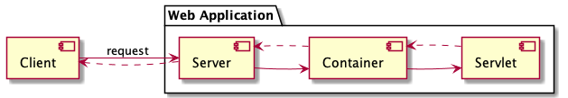
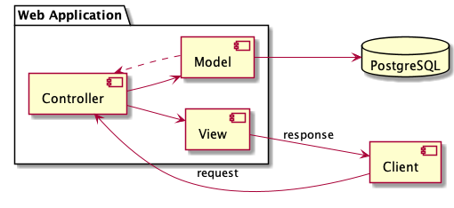
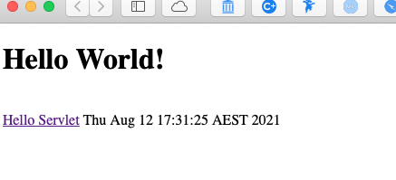

JSPs and Servlets#
Introduction#
In this subject, you will create an application using Java Server Pages (JSPs) and Servlets. This guide will provide you an overview of both.
They form the foundation of Java web development and free you from issues around deployment of standalone applications. Creating a web application using the Java framework means your application is scalable and deployable to anyone with a web browser.
Revision
Before we get into JSPs and Servlets, a quick reminder about HTTP…
There are two main HTTP methods you will make use of during the semester: GET and POST. These are HTML methods (not Java) and are used under different circumstances:
The GET method is used to request a resource from the server to send back as a response.
Data you send with a GET method is appended to the URL:/test/demo_form.jsp?name=value&id=value
In this case,/test/demo_formis the path to the resource on the server and everything after?are request parameters. This means:GET requests can be cached,
GET requests remain in the browser history,
GET requests can be bookmarked,
GET requests should never be used when dealing with sensitive data (as the request parameters are sent in the URL),
GET requests have length restrictions, and
GET requests are only used to request data (not modify).
The POST method is used to send form data and request a resource from the server. The data sent is stored in the body of an HTTP request:
POST /test/demo_form.jsp HTTP/1.1 Host: unimelb.com name=value&course=value
This means:
POST requests are never cached,
POST requests do not remain in the browser history,
POST requests cannot be bookmarked, and
POST requests have no restrictions on data length.
Servlets#
A servlet is used to implement web applications and is simply a class which responds to an HTTP request.
Servlets provide a low-level API for receiving and responding to HTTP requests - in this subject you will be using
servlets to receive and write HTTP requests and responses.
There are many frameworks built as a higher-level abstraction of servlets (for example, Spring, Apache Struts,
etc.) that remove the necessity to manually write and respond to HTTP requests, however, you are not permitted
to use these frameworks in this subject. This subject will teach you the building blocks of modern Java
web applications.
Servlets run in a servlet container which handles the networking side (for example, parsing an HTTP request, connection handling, etc.).
Java Server Pages#
Java Server Pages is a server-side programming technology that enables the creation of a dynamic, platform- independent method for building web-based applications.
JSPs vs HTML
HTML cannot generate dynamic content.
JSPs vs. JavaScript
JavaScript is client-side, whereas JSPs are server-side (JavaScript is also not part of the Java platform - don’t let the name fool you).
JSPs vs. Pure Servlets
JSPs are used in conjunction with servlets.
Apache Tomcat#
When deploying locally (before pushing to Heroku), you will make use of Apache Tomcat.
Apache Tomcat is an open source Java servlet container that implements several core Java enterprise specs, namely Java Servlet and Java Server Pages (JSP).
Introduction to Apache Tomcat#
Apache Tomcat acts as both a web server and a servlet container.
A web server receives a request from a user, finds the resource, and returns a response to the user. This
response could be another page, image, video, etc.
Web servers are great at serving static content in response to requests. However, if you need dynamically created
pages that don’t exist before the request, or the ability to write/save data to the database, you can’t rely
solely on the web server. This is the role servlets play - they are able to dynamically create pages to send as a
response to the client. You can add logic into the servlets to tell them what to do dependent on what parameters
are sent in the request.
However, web servers need a way to communicate requests and responses to servlets. This is the role Apache
Tomcat serves as a servlet container. Servlets don’t have main methods the server can call, so instead when the
web server gets a request for a servlet, the server hands the request to the container in which the servlet is
deployed (Tomcat). The container gives the HTTP request to the servlet and calls the servlet’s doGet()
and doPost() methods. You can see the interaction between these elements:

Benefits of a Container#
Apache Tomcat, as a container, handles a number of issues for you:
Communications support: The container creates an easy way for your server to talk to your servlets. The container knows the protocol to use to speak to the server, so you don’t have to make use of an API in your servlets in order to speak to the server.
Lifecycle management: The container controls the life and death of your servlets. It loads classes, instantiates servlets, knows which servlet method to call, and handles garbage collection, so you don’t have to worry as much about managing resources.
JSP support: The container translates JSP code into Java.
MVC Pattern#
Now we will describe how Tomcat, servlets, and JSPs are used together in the MVC (model view controller) pattern. You will be making use of the MVC pattern in this subject in the assignment.
In this case, the model in MVC is the domain model, the controller in MVC is servlets, and the view in MVC is JSPs. You can see the interaction between these elements:

Now you don’t actually need a view (JSPs) to format HTML web pages.
For example, adding the below to a servlet will generate a dynamically created web page:
public void doGet(HttpServletRequest request, HttpServletResponse response) throws IOException {
response.setContentType("text/html");
PrintWriter out = response.getWriter();
out.println("<html><body>");
out.println("<h1>" + message + "</h1>");
out.println("</body></html>");
}
As is probably obvious, this is a tedious way of creating dynamic pages and anything more than basic HTML becomes extremely time-consuming. Creating views (JSPs) allows developers to separate the page content from the servlet logic. It also makes it simpler for developers to work across different aspects of the application - by keeping view logic in servlets, front-end developers need to learn how to work with servlets to make changes.
To avoid both of these issues, you will make use of JSPs - Java introduced into HTML:
<html>
<body>
<h1>Test page</h1>
<br>
<%= new java.util.Date() %>
</body>
</html>
Add this into any JSP in your project and run Tomcat - now the webpage will dynamically write the date and time on your webpage:

What’s Next
Now if you want to practice what you’ve learned, try the tutorial to Create Your First Web App.